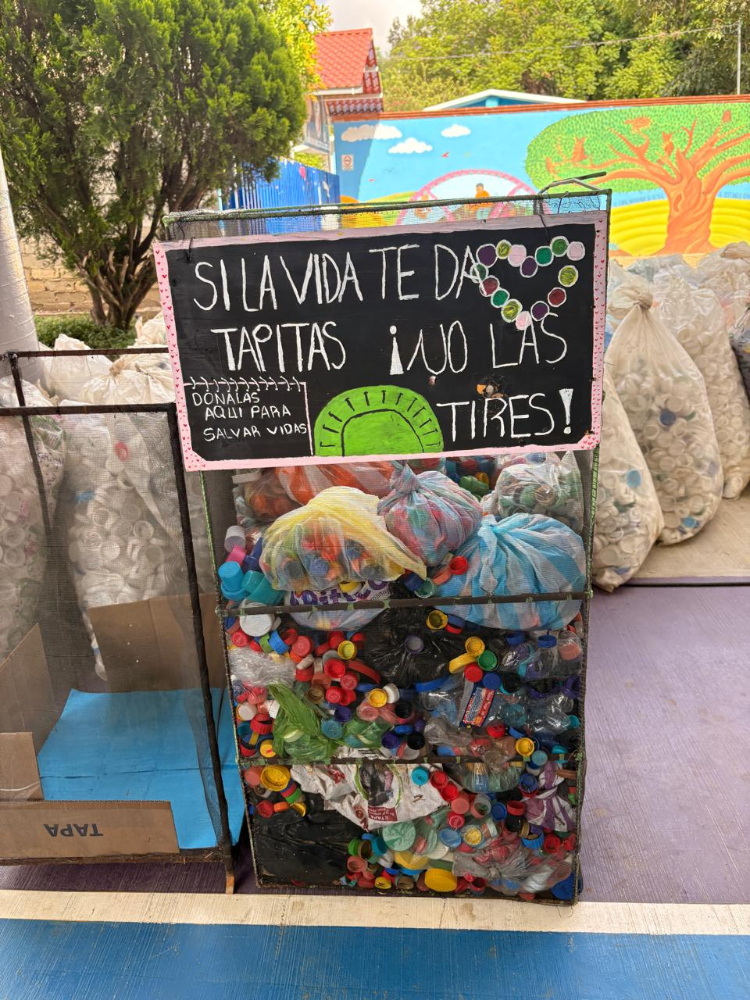
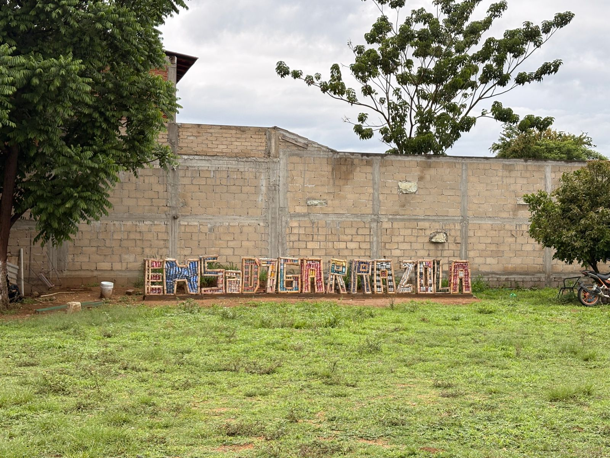
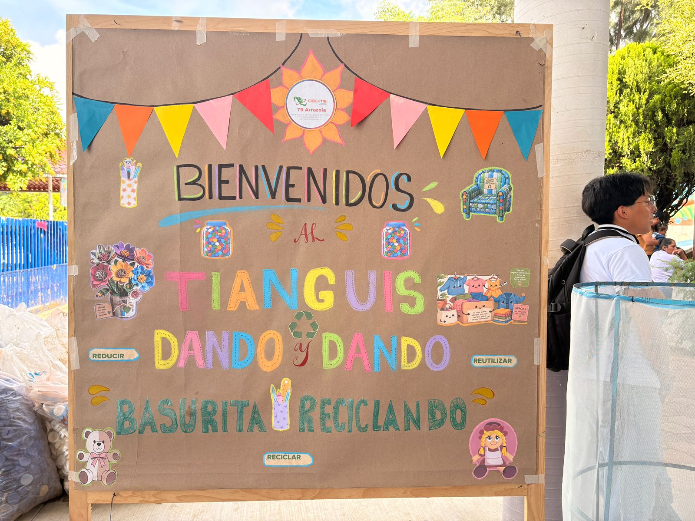
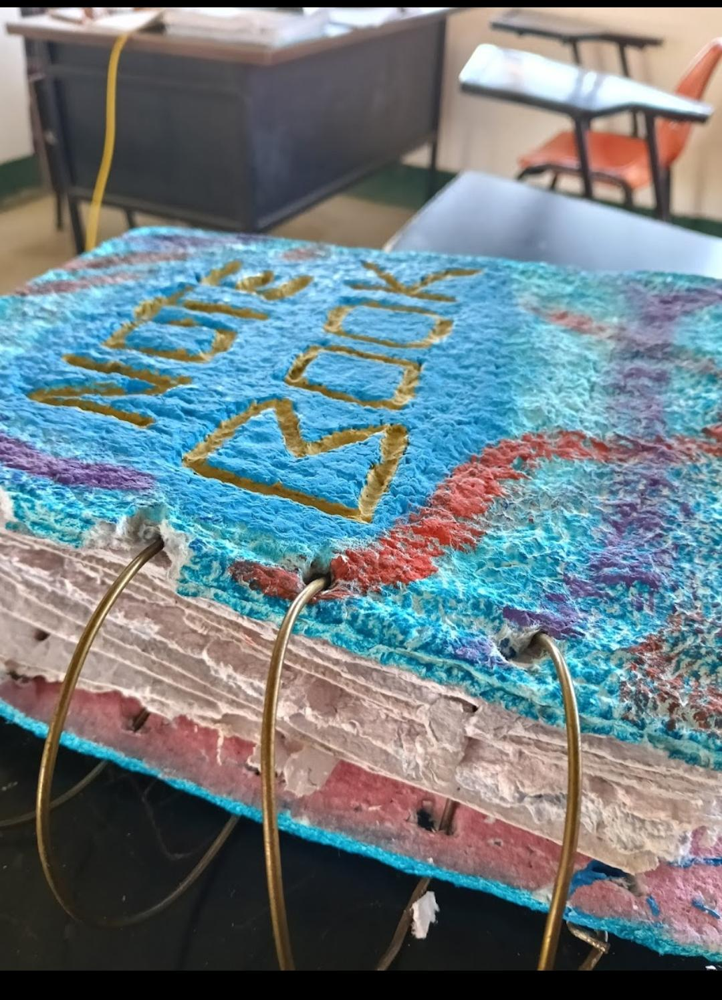

¿Qué es el Proyecto PEC?
El Proyecto Escolar Comunitario (PEC) busca involucrar a estudiantes y docentes en actividades que beneficien a la comunidad y al medio ambiente mediante el trabajo colaborativo.
¿Por qué se realiza?
Permite desarrollar valores de responsabilidad, creatividad y conciencia ambiental, además de fomentar el reciclaje y la reutilización de materiales.
Proyecto EcoRecicla: Arte Sustentable
Durante este semestre se realizaron actividades de reciclaje para transformar materiales considerados desechos en objetos útiles y decorativos.
Se recolectaron corcholatas, latas, botellas de vidrio, conos de huevo, ropa usada y papel reciclado. Con estos materiales se elaboraron tapetes, sillones, muñecos de trapo, letras monumentales, libros reciclados y botellas decoradas.



